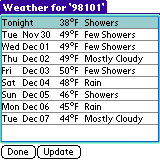
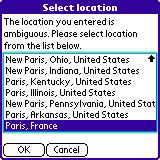
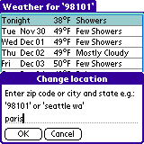
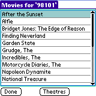
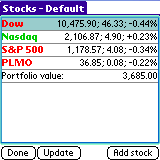
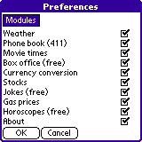

| |
Products | Downloads | Buy | Documentation | News | Support |
|
|
InfoMan requires a Palm PDA with direct, wireless connection to the Internet.
Those models include (but are not limited to): Treo 600, Treo 650, Tungsten C,
Tungsten W, Clie PEG-TH55, Clie PEG-UX50, Kyocera QCP-7135,
Samsung SPH-i500, Treo 300, Treo 270.
InfoMan is optimized for Treo smartphones. |
| Download InfoMan and install InfoMan.prc on the device. |
 InfoMan provides up-to-date information to your wireless Palm device. InfoMan consists of
multiple modules. Each module provides a specific kind of information.
At startup InfoMan shows a list of availables modules. Modules marked as (free) can be used
infinitely without registering InfoMan. Non-free modules can be used until request limit
is met, after that you need to register InfoMan in order to use it.
To launch a module you can:
InfoMan provides up-to-date information to your wireless Palm device. InfoMan consists of
multiple modules. Each module provides a specific kind of information.
At startup InfoMan shows a list of availables modules. Modules marked as (free) can be used
infinitely without registering InfoMan. Non-free modules can be used until request limit
is met, after that you need to register InfoMan in order to use it.
To launch a module you can:
|
|  Module weather provides current weather forecast for both U.S. and international cities. When you use it for the first time it asks for location. You can enter either a U.S. zip code (e.g. "98101") or a city and state in U.S. (e.g. "seattle wa") or the name of the city (e.g. "paris", "rio de janeiro", "london"). After downloading data for a given location InfoMan displays a summary forecast for the next few days. |
| You can see detailed forecast for a given day by selecting it from the list or using 'View/Detailed' menu item. You can also quickly switch between days using pop-up menu or left/right arrows in the upper right part of the screen. |
|   To see forecast for another location, use menu 'Main/Change location'. When location name is ambiguous, InfoMan displays a list of all locations that match entered location. You can also use menu 'Temp/Fahrenheit' or 'Temp/Celsius' to change how temperature is displayed. |
| Module phone book provides a variety of phone-related searches. |
 Use person search to perform white pages search for a phone number based on person's name.
Use person search to perform white pages search for a phone number based on person's name.
|
| Use business search to perform yellow pages search for a phone number based on business' name. |
| Use reverse phone to find out person's information based on phone number. |
| Use zip code search to find out all the zip codes for a given city. |
| Use reverse zip code search to find out city for a given zip code. |
| Use area code search to find out area codes for a given city. |
| Use reverse area code search to find out city for a given area code. |
| Use international code search to find out a country code and city codes for major cities in that country. |
| Module movie times provides movie times for U.S. cities. When you use it for the first time it asks for location. You can enter either a U.S. zip code (e.g. "98101") or a city and state in U.S. (e.g. "seattle wa"). |
| After downloading data for a given location InfoMan displays a list of nearby theaters. Select a theater to see all movies being played in that theater. Select a movie hyperlink to get movie information. |
|  Use button 'movies' to switch to a list of all movies. Select a movie to see which theaters are currently showing it. Select theater hyperlink to get theater information. Use 'Theaters' and 'Movies' buttons to switch between list of movies and list of theaters. |
| Module box office shows current U.S. box office results i.e. which movies were most popular at theaters during latest weekend. |
 At startup module currency conversion shows current rates of four most popular currencies: US dollar,
Euro, Yen and british pound relative to $1 (one US dollar).
Use "Amount" text field to change the amount of currently selected currency. This will automatically
update values of other currencies relative to that amount. For example, if you want to find out
how much is $10 (ten US dollars) in Euro, change the amount for US dollar to 10. If you want to
find out how much is 10 Euro in US dollars, change the amount for Euro to 10.
At startup module currency conversion shows current rates of four most popular currencies: US dollar,
Euro, Yen and british pound relative to $1 (one US dollar).
Use "Amount" text field to change the amount of currently selected currency. This will automatically
update values of other currencies relative to that amount. For example, if you want to find out
how much is $10 (ten US dollars) in Euro, change the amount for US dollar to 10. If you want to
find out how much is 10 Euro in US dollars, change the amount for Euro to 10.
|
| You can modify list of currencies by adding new currencies to the list or removing them from the list. To add currency to the list, use menu 'Main/Add currency' or button 'Add' and select currency from the list. To delete currency, select it and use menu 'Main/Delete currency' or button 'Delete'. |
| At startup module stocks shows a default portfolio with three default stock symbols: Dow Jones index, Nasdaq index and S&P 500 index. Below the list of stocks you see a total portfolio value which is a sum of current stock prices multiplied by number of shares of this stock in a portfolio. You can add stocks to a portfolio, delete stocks from a portfolio and change the quantity (number of shares) of a given stock in the portfolio. |
| To add a stock to a portfolio use either a menu item 'Main/Add stock' or the button 'Add stock'. Enter a stock ticker and quantity (number of shares). |
|  If there is no stock with the exact sticker you'll see a list of stocks with a matching name. Select a stock from the list to add it to the portfolio. |
| InfoMan supports multiple portfolios. To add a portfolio use menu 'Portfolio/Add portfolio'. |
| You can switch between portfolios. You can also delete and rename them. |
| Using module jokes you can get a random joke using 'Random joke' button. |
| Or you can search jokes using a multiple different criteria. |
 Module about shows basic information about the program like program
version. It also has links for checking for program updates
and registering InfoMan (if not yet registered).
Module about shows basic information about the program like program
version. It also has links for checking for program updates
and registering InfoMan (if not yet registered).
|

 If you don't use some of the modules, you can remove them from the main screen by using
preferences.
If you don't use some of the modules, you can remove them from the main screen by using
preferences.
|
 Unregistered version of InfoMan limits the number of times InfoMan can be used.
In order to remove that limit you need to purchase registration code. After purchasing
InfoMan, we e-mail registration code to you. We strongly recommend saving
it in a safe place for future reference.
Unregistered version of InfoMan limits the number of times InfoMan can be used.
In order to remove that limit you need to purchase registration code. After purchasing
InfoMan, we e-mail registration code to you. We strongly recommend saving
it in a safe place for future reference.
Use menu item 'Options/Register' to enter registration code. Press 'Later' to postpone registration process. Press 'Register' to verify registration code. Registration code consists of numbers only. |
|
If the registration code is invalid, InfoMan will show a dialog box informing
about that. Press 'OK' to postpone registration process or 'Re-enter registration
code' to correct the registration code.
If the registration code is valid, InfoMan shows a dialog box notifying about that. If you re-install InfoMan you'll have to re-enter registration code, so please keep it for future reference. |
|
You can check if there's an updated version of InfoMan directly from the program.
Select menu 'Options/Check for updates'. If a web browser is installed
on the device you'll be taken to a page showing if there's in update for
InfoMan.
You can also use 'Options/ArsLexis website' to visit a special version of ArsLexis website optimized for viewing on Palm web browser. You'll find there description of our software for Palm and links to direct downloads. |

|
On Treo InfoMan supports 5-way navigator for one-handed operation. |
|
We strive to provide great support for our software. To obtain support please visit support page on our website. To provide feedback to our development team, suggest improvements, discuss ideas and exchange tips and tricks with other users, participate in our Yahoo! based discussion group http://groups.yahoo.com/group/arslexis. |